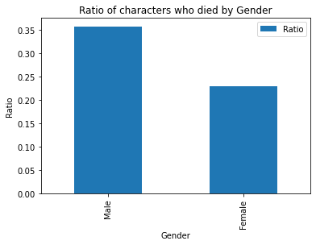

Game of Thrones is a fantasy drama TV series adapted from the book series A Song of Ice and Fire. It takes place in a fictional world on the continent of Essos in a time period similar to the medieval ages. Despite being a fantasy series, much of the themes are true to history. One of the main themes is the roles of men and women. Historically, women held the domestic resonsibilities while the men went off and gathered food or ventured into battle. The rate at which men died in Game of Thrones was higher similarly to how it was in real life.
In real life history, women were much more frequently the victims of violence rather than the ones who participated in battle. If a community was attacked by an enemy, the women would sometimes be kept alive and taken back to the victorious group's home whereas the men, who would have lost the battle by this point, would most likely all be dead.
Game of Thrones was not much different in this regard to real life history, although,
the writers did include a fair amount of female combatants. For the most of the common
folk in the show/novels, women were generally shown as the caretakers while their husbands
were dragged off to battles and wars. Scenes from the insides of towns often showed
men grabbing weaponry to defend while women and children were ushered indoors and away
from the violence. Women were also sometimes used as strategic advantages over an
enemy. How did this effect the characters rate of death though? Pretty dramatically. In
data taken from a GOT Kaggle dataset
which included 916 characters from the novels and show, men were 64% more likely to be
killed (by any means) than women. The chart below shows the ratio of death based on all
characters broken down by gender.

Now, while Game of Thrones did draw many comparisons to the real life medieval days, there were many female characters who played a significant role in fighting battles. In fact, one of the main characters of the show/series, Daenerys Targaryen, brought one of the most powerful kingdoms to its knees. Many other women had pivitol roles and played a significant part in very important series events, without giving any spoilers. The mighty Brienne of Tarth even ended up being knighted and became Lady Commander of the Kingsguard.
Despite the amount of women that played a vital role in Game of Thrones, the statistics of how many men died compared to women still prove the point. The authors and writers managed to stay somewhat true to the historical medieval time period whether it was intentional or not. The only question that remains though, if women had an equal role in combat as men in the show, would the statistics be more even? We probably will never know. It seems that they brought female characters into the show who had important enough roles that accomplished a bit of equality all while staying true to the old themes that men died more than women.